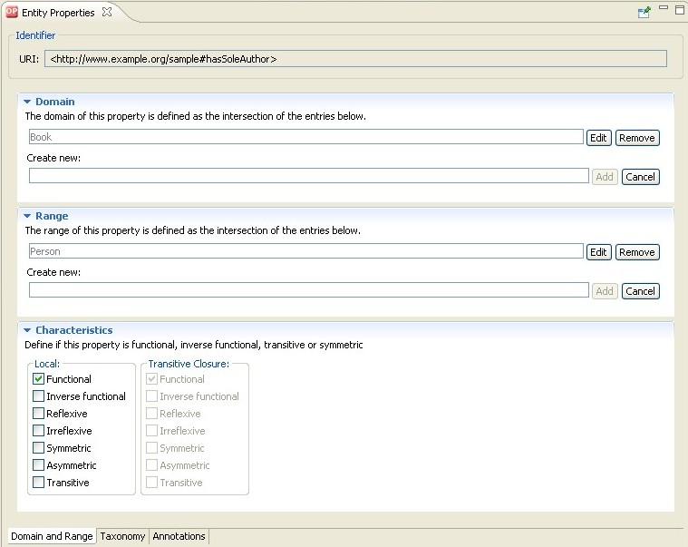
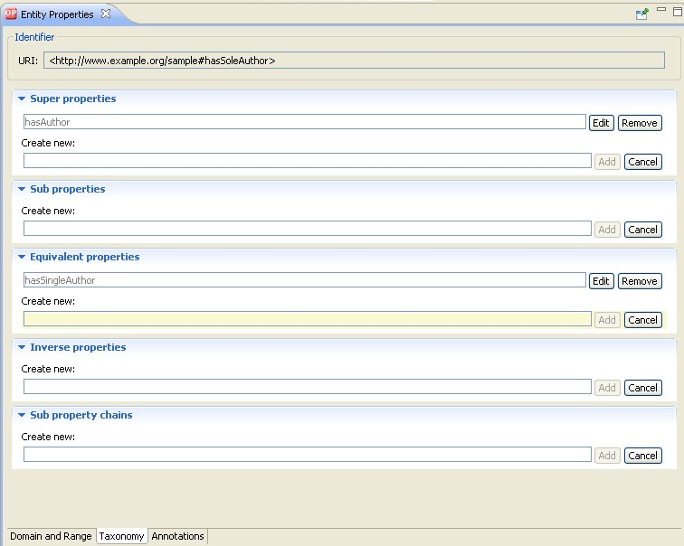
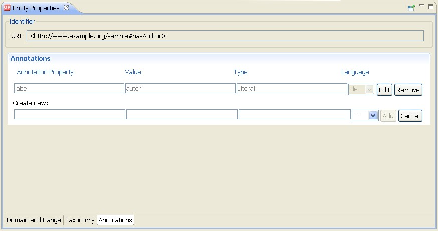

Object Properties
An object property is a binary relation between two individuals that lets you assert general facts about
the members of classes and specific facts about individuals. Characteristics of a property are defined by
so-called property axioms. In its simplest form, a property axiom just defines the existence of a property.
However, property axioms often define additional characteristics of properties. OWL supports the following
constructs for property axioms:
- RDF Schema constructs. Represented in OWL by the language constructs rdfs:subPropertyOf,
rdfs:domain and rdfs:range.
- Relations to other properties. Represented in OWL by the language constructs owl:equivalentProperty
and owl:inverseOf.
- Global cardinality constraints. Represented in OWL by the language constructs owl:FunctionalProperty
and owl:InverseFunctionalProperty.
- Logical property characteristics. Represented in OWL by the language constructs owl:SymmetricProperty,
owl:TransitiveProperty and others.
These language constructs are distributed to the following tabs in the Entity Properties panel:
- Domain and Range. Properties may have a domain and a range specified, that is, they link individuals from
the domain to individuals from the range. In addition, you can add global cardinality constraints as well as logical
property characteristics here.
- Taxonomy. Object properties can be organized into a superproperty-subproperty hierarchy, also known as a taxonomy.
- Annotations. OWL allows properties to be annotated with readable labels, comments, or other useful information.
For instructions on how to create an object property,
see Create an Object Property.
Online References
Further information is available at the following Web sites:
Domain and Range
The notions domain and range have meanings inspired by the mathematical uses of these terms.
In mathematics, they are used to refer to how a function can be used. The domain of a function is the set of values
for which it is defined, while the range is the set of values it can take. Similarly in OWL, if you specify a class
D as the domain of the property P and class R as the range of P, the informal
interpretation of this is that the Property P relates values from the class D to values from the
class R.
Note – Use domain and range declarations with care. It is important to realize that in OWL domain and range
declarations do not act as constraints to restrict the relation. It is tempting but not correct to think of rdfs:domain
as the class of objects to which a property can be applied. Instead, it is used as an axiom for reasoning purposes.
For example, any individual that uses a property with a given domain can be inferred by the reasoner to be a member of
the domain class, for the statement P rdfs:domain D just means that all things to which P is applied can be
inferred to be a member of class D. This, on the other hand, can lead to unexpected classification results and
side effects, especially in situations when multiple ontologies may be merged. Therefore, consider not setting any
domains and ranges and using local class restrictions instead.
In addition to simple classes you can also enter complex classes using the Manchester Syntax.
Note that selecting multiple domains means that the domain of the property is the intersection of the classes
(and similarly for range).
Characteristics
Additionally, OWL allows the meaning of properties to be enriched through the use of property characteristics.
- Functional.
If a property is functional, for a given individual, there can be at
most one individual that is related to the individual via the property.
- Inverse Functional.
If a property is inverse functional, then it means that the
inverse property is functional. For a given individual, there can be at most one individual
related to that individual via the property.
- Reflexive.
If a property P is reflexive, then we can derive that each individual a is related to
itself via P.
- Irreflexive.
If a property P is irreflexive, then we can derive that no individual a is related to
itself via P.
- Symmetric.
If a property P is symmetric, and the property relates
individual a to individual b,
then individual b is also related to individual a via
property P.
- Asymmetric.
If a property P is asymmetric, and the property relates
individual a to individual b,
then individual b cannot be related to individual a via
property P.
- Transitive.
If a property P is transitive, and the property relates individual a to
individual b, and also individual b to individual c,
then we can infer that individual a is
related to individual c via property P.
The Characteristics section contains two sets of check boxes.
The left set is changeable and represents the assertions of the current ontology.
The set on the right hand side, labeled transitive closure, cannot be changed and represents also assertions
that come from imported ontologies.

Taxonomy
On this tab you can specify relations to other properties. This includes the following settings:
- Super Properties/Sub Properties. Object properties can be defined in a hierarchy in the same way as classes
can be organized in a hierarchy. For example, a hierarchy of the property hasParent may have a subproperty
hasMother and hasFather. When querying the ontology, you can now ask for individuals that are linked
by the hasParent property, and return all results that are linked by its subproperties.
- Equivalent Properties. The owl:equivalentProperty construct can be used to state that two properties
have the same property extension.
- Inverse Properties. Properties usually have a direction, from domain to range. In practice, it is often useful
to define relations in both directions: authors write books, books are written by authors. The owl:inverseOf
construct can be used to define such an inverse relation between properties.
- Sub property Chains. OWL 2 introduces the new feature of property chaining, which lets you define
that the the composition of a sequence of properties is a subproperty of a named property, eg.
the famous uncle example hasParent o hasBrother is a subproperty of hasUncle.

Annotations
Usually, annotations are used to add information to resources of the ontology. They contain useful information such
as who is the creator or what are the readable labels and comments for single elements of the ontology.
For information on how to create an annotation, see Create an Annotation.
